睽卦 火澤睽
睽，小事吉。初九，悔亡，喪馬勿逐，自復。見惡人，无咎。九二，遇主于巷，无咎。六三，見輿曳，其牛掣，其人天且劓，无初有終。九四，睽孤，遇元夫。交孚，厲无咎。六五，悔亡。厥宗噬膚，往何咎。上九，睽孤，見豕負塗，載鬼一車，先張之弧，後說之弧，匪寇婚媾。往，遇雨則吉。
【卦名】
今本：睽 帛書：乖 帛書《繫辭》：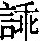 歸藏：瞿 秦簡：䂂 上博簡：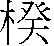 清華簡： 海昏：癸
睽違、分離、孤獨，涇渭分明。
睽的金文作 （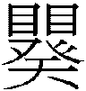），從䀠從癸，後來雙目簡化為單目。歸藏作瞿，秦簡作䂂。
《說文》：「睽，目不相聽也。」段注：「聽猶順也。二女志不同行，猶二目不同視也，故卦曰睽。」聽即順的意思。目不相聽，兩眼彼此不相順，不協調，無法一同看一樣東西，即俗稱的斜視或眼睛脫窗。觀其金文，上面雙目，下面一個癸字，似乎是要表達雙眼視線往四面八方走。
睽從兩眼的不協調，又引申為人與人之間的彼此不一致，合不來、違背、乖離。
歸藏作瞿，秦簡則多了目字旁作䂂。
瞿《說文》說是「鷹隼之視也」，究其甲骨文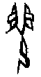，畫的是一個人跪坐瞪大眼睛，表示恐懼，這是懼的本字，恐懼的意思。瞿與睽在字源上都源自於雙眼的描繪，古文形近，上皆從䀠，于省吾以此認為，瞿是之譌誤（《易經新證》）。
卦象上為離，互體又一離，為上有雙目之象。
睽也可能假借為戣，戣是一種兵器，與瞿近似，《尚書．周書》：「一人冕，執戣，立于東垂；一人冕，執瞿，立于西垂。」孔傳：「戣瞿皆戟屬。」鄭玄：「戣、瞿，蓋今三鋒矛。」這不但可以解釋為何歸藏將「睽」作「瞿」，還可解釋為何《繫辭下》這麼說：「弦木為弧，剡木為矢，弧矢之利，以威天下，蓋取諸睽。」以及上九爻辭：「先張之弧，後說之弧。」可見睽在古時可能是一種像是弓箭的兵器。卦象上離為戈兵，下兌為銳，銳利之戈兵，符合戣之義。
上博簡作楑，楑通揆，為揆度、法度的意思。清華簡作，是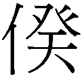的繁化，則是睽的異體字，兩字音義皆同。
有趣的是，這些字與睽都有共同的字根「癸」字。癸為十天干的最後，在卜辭中就如此使用，其甲骨文作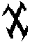，金文還保留這樣的形構。畫的是很像飛鏢的兵器，另也有點像是《說文》所說的「冬時水土平，可揆度也」，也就是測量的意思，有古文字學家以此認為這是規的古字。依羅振玉說，癸就是戣的初文，象一種古兵器。是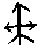的形變，即三鋒矛。郭沫若及李孝定等學者亦贊同此說。
不過傳統上睽卦解釋作乖離。《雜卦傳》：「家人內也，睽外也。」《序卦傳》：「家道窮必乖，故受之以睽，睽者乖也。」此以乖釋睽，帛書卦名即作乖。
《說文》：「乖，戾也。」段注：「戾，曲也。曲則不伸，故為睽離。」乖也是乖張、乖離的乖，意思為不協調，無法一致，違背，別離。睽卦講的可能是分家之事，原本的一家人，現在要變成兩家人，彼此見外，斤斤計較（揆），甚至兵戎相見（戣）。《雜卦》「家道窮必乖，故受之以睽」，依雜卦，睽是家道衰落之後彼此形同陌路，相互乖離而無法相互關心。
【卦義】
睽卦的意思為乖離，人與人相互見外，彼此涇渭分明。同牀異夢、各走各的路、道不同不相為謀，都可以用來說明睽卦。睽也可假借為戣，是一種兵器。
就卦象來看，睽卦是兩女同居不同心，少女在下，中女在上，六三與六五兩陰爻都不當位，六三乘初、二之剛，六五乘九四。澤水動而下行，離火動而炎上，澤與火背道而馳，各走各的路；兩個女人同住而各有所思，無法相處。這也是《象傳》說的：「火動而上，澤動而下，二女同居，其志不同行。」相較之下，家人卦則是中女與長女相處融洽，長女在上，中女在下，六二及六四都當位。
得睽卦若是問感情、友情等一類的事情，那麼這是一個很不好的卦，表示人與人的相處不和睦，雙方打冷戰。小事或者可成，卦辭說小事吉。但因人心違和，缺乏團隊的諧調，所以不能成大事，反而應該注意如何管理人心向背的問題。《象傳》說：「睽，君子以同而異。」得睽卦也當了解與尊重他人的不同、特異之處。
就卦象來看，睽之所以小事吉者，除了水火違行，人心不和之外，睽主爻為六五，柔得中而為主，因此小事吉。
處睽之時，往往所遇非所想，所想非所遇，事情總是不依劇本，脫稿演出，出人意表。六爻展現出的也是凡事都不符常規，而有些光怪陸離，匪夷所思，有如奇幻冒險。如初九，遺失的馬追而不可得，卻又自己跑回來了。見了惡人反而無咎。九二遇主於窄巷，六三見輿曳牛掣與惡人，上九見豕負塗，載鬼一車，諸如此類。而事情的解決，也往往不是依照常理，甚至必需違離本意。如初九之喪馬自復，見惡人，九二遇主於巷。
陳夢雷：「六爻皆有始睽終合之象。初喪馬，至四遇元夫，而初四合。二遇巷，至五往何咎，而二五合。三輿曳牛掣，至上遇雨而三上合。內卦皆睽而有所待，外卦皆反而有所應。天下未有終睽而不合者也。」
睽，小事吉。
《彖》曰：睽，火動而上，澤動而下，二女同居，其志不同行。說而麗乎明，柔進而上行，得中而應乎剛，是以小事吉。天地睽而其事同也，男女睽而其志通也，萬物睽而其事類也，睽之時用大矣哉。
《象》曰：上火下澤，睽，君子以同而異。
小事吉，大事則因人心違和，缺乏團隊合作而難成。
睽為乖離，人與人不和，之所以小事吉，睽卦內兌悅而外離明，六五（睽卦主爻）具有柔順中庸的美德，又與九二相應（得中而應乎剛），所以小事吉。小事也可意指私事，或者是不需與人合作之事。反之，大事為公事，或者必需團隊合作之事。
荀爽：小事者，臣事也。百官異體，四民殊業，故睽而不同。剛者，君也。柔得其中，而進於君，故言小事吉也。
孔穎達：睽者，乖異之名，物情乖異，不可大事。大事謂與役動眾，必須大同之世，方可為之。小事謂飲食衣服，不待眾力，雖乖而可，故曰小事吉也。
君子以同而異：而通能，「以同而異」即「以同而能異」。荀爽曰：「大歸雖同，小事當異。百家殊職，四民異業。文武並用，威德相反，共歸於治，故曰君子以同而異也。」朱震：「彖言異而同，大象言同而異。」《彖傳》說「天地睽而其事同也，男女睽而其志通也，萬物睽而其事類也」，這是由睽異而合同。《象傳》說「君子以同而異」，則是同中存異。
初九，悔亡，喪馬勿逐自復。見惡人，无咎。
《象》曰：見惡人，以辟咎也。
後悔消失，失去的馬不用追逐，自己會跑回來。見惡人則可免罪咎。
處於睽違孤獨的時候，應有去者不追，來者不拒的心理準備，凡事不可強求。失去的馬，不必去追逐，該回來的時候它自然會回來。惡人，人之所惡，但是該見之時還是必需與他見面，以避免罪咎。
處睽乖的時候，事情發展往往不依常規，違背心願。因此凡事不宜堅守窠臼，當無可無不可。
喪馬勿逐自復：勿逐，不用追逐、尋找。復，回來。自復，自己回來。遺失的物品不用尋找，失物自然會回來。坤「先迷後得」，喪馬即先迷，自復即後得。震六二：「震來厲，億喪貝，躋于九陵。勿逐，七日得。」既濟六二：「婦喪其茀，勿逐，七日得。」
惡人：醜惡之人，或有罪之人。惡有多義，美惡的惡，善惡之惡，罪惡之惡，厭惡之惡。惡人可解釋為醜惡之人，或有罪之人、素行不良之人、兇惡之人，但以醜惡之人為佳。《莊子．德充符》：「衛有惡人焉，曰哀駘它。」此惡人指的是形態醜惡之人。帛書作「亞人」。惡由亞字發展而來，到小篆才出現，甲金文中並無惡字。因此當從帛書。《說文》：「亞，醜也，象人局背之形。賈侍中說：以為次弟也。」或云，惡人即九四所遇之元夫。
見惡人：「見」有兩義，一是同「利見大人」之「見」，為主動求見，並非路上偶遇或惡人來見。此言當去見惡人乃可免咎。惡人原本為人所惡，避之唯恐不及，但睽乖之時，反而應當主動求見於他。傳統儒家以孔子見陽貨解釋見惡人，此以惡人為素行不良之人，並以見為路上相見、看見之見，如後文之「見輿曳」、「見豕負塗」。朱熹：「亦必見惡人，然後可以辟咎，如孔子之於陽貨也。」朱震：「夫子見陽貨，陽貨先也，故不得不見，若屈己而先見之，睽非不合矣。見之可也，從之不可也。」孔穎達：「處於窮下，上无其應，无應則无以為援，窮下則无權可恃。若標顯自異，不能和光同塵，則必為惡人所害，故曰見惡人无咎。見，謂遜接之也。」
九二，遇主于巷，无咎。
《象》曰：遇主于巷，未失道也。
在小巷道內與主人相遇，沒有罪咎。
得此爻，若是為人主管求才，則無法以正式的手段求得，必須求之於巷道，臺面下運籌，或委曲輾轉而得；而如果是要謀事，也當如此。
小巷非正道、大道，小巷道相遇，比喻不是很光明正大，而是暗地進行，或不由正規之途徑。但成大事不拘小節，所以象傳說：「遇主于巷，未失道也。」九二與六五相應，為「遇主」之象，六五即所遇之主，六五爻說的「其宗」。然而睽卦為人事乖離的時候，凡事不依常理而行。九二與六五之間又有坎險（三至五爻的互卦為坎），因此遇主於巷實為不得已，勢之所然，只要不違背正道，當然沒有罪咎可言。孔穎達以「巷」比喻為不遠。
虞翻：二動體震。震為主，為大塗，艮為徑路。大道而有徑路，故稱巷。變而得正，故无咎而未失道也。
王弼：處睽失位，將无所安。然五亦失位，俱求其黨，出門同趣，不期而遇，故曰遇主於巷也。處睽得援，雖失其位，未失道也。
孔穎達：不假遠涉而自相遇，適在於巷。言遇之不遠，故曰「遇主於巷」。主謂五也，處睽得援，咎悔可亡，故无咎也。
程頤：巷者委曲之途也，遇者會逢之謂也。當委曲相求，期於會遇，與之合也。所謂委曲者，以善道宛轉將就使合而已，非枉己屈道也。
李光地：《春秋》之法，備禮則曰會，禮不備則曰遇。睽卦皆言遇，小事吉之意也。又《禮》，君臣賓主相見，皆由庭以升堂。巷者，近宮垣之小逕，故古人謂循牆而走，則謙卑之義也。謙遜謹密，巽以入之，亦小事吉之意也。
按：李光地以「備禮則曰會，禮不備則曰遇」解釋，然而《周易》之中只言「遇」，無一「會」字，難道《周易》中絕無「備禮」而會之時？該說之偏頗可知。
遇主於巷：《說文》：「遇，逢也。」《爾雅》：「遘，逢，遇也。」「遘，逢，遇，遻，見也。」遇有不期而會以及偶得之義。依香港中文大學漢語多功能字庫，主與示，宔與宗同源，是同一甲骨文字的分化，主通宗。九二所遇之主，即六五之宗。巷字小篆才出現，《說文》作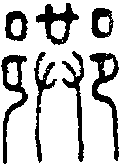：「里中道，从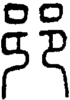从共，皆在邑中，所共也。」其簡寫為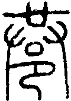。另有字：「鄰道也。」王引之《經義述聞．通說上》：「家大人曰：古謂里中道為巷，亦謂所居之宅為巷。」巷又有隘室的意思，但此義較少見於經典。
六三，見輿曳，其牛掣，其人天且劓。无初有終。
《象》曰：見輿曳，位不當也。无初有終，遇剛也。
見到有人因車子難以前進而在拉車，牛不斷地在仰頭使力。這個人額頭上有犯罪遭刑的刺青，鼻子被割掉。開始很糟糕，但最後算是有個結果。
此言車子前進時困難，以致於牛很使力。車子是遠行及載物的工具，車子困住，比喻事情前進有困難，停頓無法前進。
「其人天且劓」或可視為初九所說的「惡人」。
見輿曳，互體坎為車多眚，離為見。離為牛，下兌為毀折，牛傷故掣。坎為刑。
【字義】
見輿曳：輿，車子。曳，音業或意，牽引、拉。曳義同於掣，都是指前進困難的意思。
其牛掣：掣，音徹，牽制，此言牛停止。也可讀作「機」，同畸，《集解》作「𧤊」，《說文》引作「觢」：「一角仰也。」「《易》曰：其牛觢。」段注：「一當作二。〈釋嘼〉曰：『角一俯一仰，觭；皆踊，觢。』皆踊謂二角皆豎也。... 睽六三其牛掣，鄭作㸷，云：『牛角皆踊曰㸷。』與《爾雅》、《說文》同。子夏作契，荀作觭，虞作掣，皆以一俯一仰為訓。與許、鄭不同也。觢者、如有掣曳然。角本當邪展而乃聳直也。虞本當同荀作觭。李氏鼎祚正文作掣。遂比而同之耳。」觢音勢，牛角豎直。其牛掣有二解：一是他的牛牛角豎直，為豎角牛。二，通解為牛拉車而牛角豎直仰天之狀。「見輿曳，其牛掣」帛書作「見車恝，其牛」。恝通子夏所用的契，通詍，音曳，可借為曳。張政烺認為，王弼本與帛書本用字相通，二字互易，為抄寫時筆誤。
其人天且劓：天，有二說，一是古時的肉刑，在額頭上刺青。二是去髮之刑。劓，音意，割鼻的刑罰。其人天且劓，拉車的這個人遭受過兩種肉刑，曾經是個罪犯。初爻說「見惡人」，則此人就是惡人。馬融：「剠鑿其額曰天。」孔穎達：「剠額為天，截鼻為劓。既處二四之間，皆不相得，其為人也，四從上刑之，故剠其額，二從下刑之，又截其鼻，故曰其人天且劓。」程頤：「天，髡首也。」髡音昆，剃髮之刑。陳夢雷：「天，去髪之刑。劓，去鼻之刑。」
无初有終：沒有開始，有結束。意指開始的時候事情非常糟糕，但還是能夠有結果。終，結果。王弼：「四從上取，二從下取，而應在上九，執志不回。初雖受困，終獲剛助。」程頤：「始為二陽所戹，是无初也。後必得合，是有終也。」
九四，睽孤，遇元夫，交孚，厲无咎。
《象》曰：交孚无咎，志行也。
分離而孤獨，遇到部落的族長，彼此交心互信，艱苦則沒有罪咎。
雖然處境受到孤立，孤獨無援到極點，但由於遇到與自己同德的朋友，能以誠心相交而共處時艱，終能免於罪咎。九四居於互體坎中，處多懼之位而為六五所乘。初九及六三都有「惡人」之描述，注家多認為「惡人」即指九四，則九四是眾人眼中的惡人，因而受到孤立。但九四乃面惡心善之人，或者是有前科但並不是那麼壞的人，而且與人可以誠信相交，唯眾人以貌取人。現在則遇到知音，與他誠心相交，故得無咎。
傳統皆以初九為元夫，如孔穎達：「元夫謂初九也。處於卦始，故云元也。」朱熹：「睽孤，謂无應。遇元夫，謂得初九。交孚，謂同德相信。然當睽時，故必危厲乃得无咎，占者亦如是也。」
陳夢雷：元，善之長，惡之反，初剛而得正，故為元夫。然當睽之時，惟恐交孚之不至，必以危厲處之，乃无咎也。初視四為惡人，四視初為元夫者，初得正而四不正也。
睽孤：乖離而孤獨。孤原意為孤兒，引申為孤立、孤獨。《說文》：「孤，無父也。」《孟子．梁惠王下》：「幼而無父曰孤。」高亨認為「孤」為孤兒之意，睽孤為流離在外的孤兒。《尚書．周官》：「少師、少傅、少保，曰三孤。」虞翻：「孤，顧也。在兩陰間，睽五顧三，故曰睽孤。」虞翻以孤為顧，顧為回頭看，睽孤為乖異（與人不同）而回頭看。帛書作「乖苽」，苽通菰，為雕瓜，可能借為孤。
元夫：元，大。元夫，大丈夫。孔穎達：「初四俱陽而言夫者，蓋是丈夫之夫，非夫婦之夫也。」黃玉順《易經古歌考釋》：「元，大也。元夫，大夫也。也可解釋為一族之長。」元本義為首、始，元首。元者善之長也，古籍及卜辭中解釋為長或大，如「元子」即長子。元夫應是一族之長。遇元夫，遇到一族之長。或云元為原來的原，原夫為原來的丈夫，即前夫。這種用法於古義不合。
六五，悔亡，厥宗噬膚，往何咎。
《象》曰：厥宗噬膚，往有慶也。
不再後悔，族人或宗主吃好吃的膚肉，前往不會有罪咎。
李光地：睽之時小事吉者，逕情直行則難合，委曲巽入則易通也。如食物然，齧其體骨則難，而噬其膚則易。九二遇我乎巷，是厥宗之來噬膚也。
厥宗噬膚：厥，音絕，其的意思。宗，本義為宗廟，《說文》：「尊祖廟也。从宀从示。」宀為宗廟，示為神主牌。宗由宗廟引申為宗族、宗室。但傳統易學家將宗解釋為主、宗主，君主。如孔穎達：「宗，主也。」陳夢雷：「厥宗，指九二于五，猶宗臣也。」程頤則以宗為黨。噬，吃，或咬。噬膚，有兩種解釋。一是受到肌膚之刑，受傷很淺，可再參考噬嗑卦六二：「噬膚滅鼻，无咎。」第二種解釋是吃到柔脆好吃的膚肉。膚為食物，帶皮、外脆內軟，好吃的肉。《象傳》說「往有慶也」，則噬膚應當解釋作吃好吃的膚肉，不當解釋為刑罰。
上九，睽孤，見豕負塗，載鬼一車。先張之弧，後說之弧。匪寇婚媾，往，遇雨則吉。
《象》曰：遇雨之吉，群疑亡也。
分離而孤獨，見到豬全身包著泥巴，載著一車子的鬼方。先對著他們張弓，然後又將弓鬆脫。匪寇求婚媾，前往，遇到下雨則吉。
見到的怪事太多，讓人心生許多疑慮，一下子見到全身裹滿泥巴的豬（比喻見到的事很污穢骯髒），一下子見到載滿鬼方的車子（比喻詭譎到極點）。因此讓人一下子張弓，一下子又將弓鬆脫。此鬼方或指後文之「匪寇」，是要來婚媾的。
遇雨，象徵事情終於明朗，疑慮盡釋。《象傳》說的「群疑亡也」。
上九為睽極而將合之時，因此以「匪寇婚媾，往，遇雨則吉」做結束。
互體坎為豕為泥，離為目為見，故曰「見豕負塗」。離為輪，坎為鬼，兩離中有坎，故曰載鬼一車。坎為疑，離為戈兵，有弓矢之義，故張弧脫弧。
上九經文帛書作：「乖苽，見豨負塗，載鬼一車，先張之柧，後說之壺，非寇閽厚，往，愚雨即吉。」其中「先張之柧，後說之壺」與《周易集解》作「先張之弧，後說之壺」。竊疑此即《詩‧七月》說的「七月食瓜，八月斷壺。」
雨之象似乎與《彖傳》的既濟定及未濟定旁通有關。詳見下圖。關於《彖傳》旁通理論請參考：【彖傳研究】旁通古法的重建 II—新的旁通法則
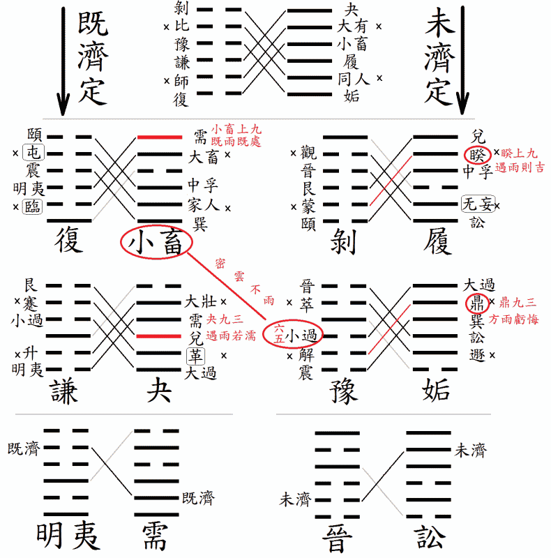
經文中所有出現「雨」字的卦全都在這個圖裡面。首先是既濟定中的五陽一陰之卦，夬九三遇雨若濡，小畜上九既雨既處。而在未濟定的四陽二陰之卦裡，鼎九三曰方雨虧悔，睽上九曰遇雨則吉。小畜卦辭和小過六五都是密雲不雨。
見豕負塗：豕，豬。負，背負。塗，爛泥巴。《說文》：「塗，泥也。」負塗，豬在爛泥巴裡面打滾做泥巴浴之後，全身裹滿泥巴。負也可解釋為恃，《說文》：「恃也，从人守貝，有所恃也。一曰受貸不償。」塗也可解釋為道路。見豕負塗，看見豬擋在路上。《論語‧陽貨》：「陽貨欲見孔子，孔子不見，歸孔子豚。孔子時其亡也，而往拜之。遇諸塗。」
載鬼一車：鬼，歷代注解都把鬼解釋為鬼神的鬼，「載鬼一車」為無中生有，或是詭怪之極。此應指載著一車鬼方。鬼方為商周時的方國，既濟卦有「高宗伐鬼方，三年克之」，未濟「震用伐鬼方，三年有賞于大國」的記載。虞翻以坤為鬼象，但以此三卦來比對，當以坎為鬼。謙彖「鬼神害盈而福謙」的鬼應是取互體坎象。載鬼一車講的可能是戰勝而歸之象，也可能是指後文求婚媾的匪寇。只是來者當睽孤孤獨之時，見到小豬全身泥巴，然後又見到載著一車的鬼方，一時之間不知發生何事，反應不過而心生疑慮，張弓而欲自防。《詩．文王之什．皇矣》：「帝遷明德，串夷載路。」串夷即混夷，鬼方的別稱。傳統以為，這是歌頌文王之事。但徐中舒認為，這是歌頌季歷征伐鬼方之事，即未濟九四「震用伐鬼方，三年有賞于大國」的事跡，《竹書紀年》武乙三十五年「周王季伐西落鬼戎，俘二十翟王」。詳論見〈殷周之際史蹟之檢討〉。若果如此，「串夷載路」和「載鬼一車」是否有關，值得探究。
先張之弧，後說之弧：弧，音胡，弓。說，音義同「脫」，鬆脫，放下。先張之弧，後說之弧，形容事情詭譎而讓人狐疑，先是想張弓射擊，然後又鬆脫放下。陳夢雷：「弓矢本取象于睽。又坎為弓，又為狐疑。先張之弧，疑之也。後脫之弧，疑漸去矣。」弧或作壺，《周易集解》作「先張之弧，後說之壺」，《釋文》：「之弧，本亦作壺，京馬鄭王肅翟子元作壺。」陸績：「弧作壺是。」帛書本作「先張之柧，後說之壺」，虞翻：「兌為口，離為大腹，坤為器。大腹有口。坎，酒在中，壺之象也。」此如《詩．豳風．七月》所言：「七月食瓜，八月斷壺。」毛傳：「壺，瓠也。」〈七月〉為周公遭管蔡留言時陳述王業之詩。談的是周的先祖公劉遷徙到豳（邠）之後，興后稷之業，描繪的是先祖在豳時的農村日常生活。七月食瓜，八月則採瓠。斷壺，斷瓠之蒂，即採瓠。「先張之弧，後說之壺」，先是置辦瓜食，然後開始採瓠瓜。
匪寇婚媾：「匪寇婚媾」有三種解釋。一、若不是盜賊來犯，就已順利完成婚姻。匪，非，否定的意思。或作「若非」，可譯作「要不是…」。二、讀作「匪寇，婚媾」，意思為來者不是賊寇，而是來求婚媾的。三、匪寇即盜匪，「匪」作修飾辭，形容盜寇很壞。匪寇婚媾即盜匪求婚媾。寇或解釋為寇敵、寇讎，也就是敵人或仇人的意思。婚媾，女子嫁人為婚，媾為媾合，締結婚姻。婚媾即結婚、婚合。媾或解釋為男女交合，如《易．繫辭下》：「天地絪縕，萬物化醇，男女構精。」或以再嫁、重婚為媾，《說文》：「重婚也，从女冓聲。《易》曰：匪寇婚媾。」段注：「重婚者，重交互爲婚姻也。杜注左傳曰：重婚曰媾。按字从冓者，謂若交積材也。《曹風》：不遂其媾。毛傳曰。媾，厚也。引伸之義也。」媾帛本作厚。依《說文》，媾為厚重之婚，可能意指婚禮相當隆盛。屯六二「屯如邅如，乘馬班如，匪寇婚媾，女子貞不字，十年乃字」，六四「乘馬班如，求婚媾，往，吉无不利」。賁六四「賁如皤如，白馬翰如，匪寇婚媾」，震上六「震索索，視矍矍，征凶。震不于其躬，于其鄰，无咎。婚媾有言」。
遇雨則吉：遇雨則吉，下雨代表雲行雨施，大道流行，陰陽調和，事情有結果，因此遇雨則吉。《象》曰：「遇雨之吉，群疑亡也。」上九爻裡，遇到許多奇奇怪怪的事情，讓人心中困惑不解，疑雲滿天。遇雨，又代表事情明朗，所有的疑惑一下子全都解開了，所以為吉。鼎九三「方雨虧悔」。
群疑亡：群疑指的是爻辭所講諸事。
彖傳注
睽，火動而上，澤動而下，二女同居，其志不同行。說而麗乎明，柔進而上行，得中而應乎剛，是以小事吉。天地睽而其事同也，男女睽而其志通也，萬物睽而其事類也，睽之時用大矣哉。
火動而上，澤動而下：以上下二體卦象解釋睽卦卦義。上卦離為火，火性炎上，因此曰火動而上。下卦兌為澤，澤水動則下行，因此曰澤動而下。此乃火澤違行之象，故曰睽。
二女同居，其志不同：以上下二體卦象解釋卦義。下卦兌為少女，上卦離為中女，兩女同居之象。兩個女卦的主爻六三與六五皆不當位又乘剛，卦體又有水火違行之義，因此為二女同居，其志不同之象。虞翻：「二女，離兌也。坎為志。離上兌下。无妄震為行，巽為同，艮為居。二五易位，震巽象壞。故二女同居，其志不同行也。」虞翻以睽卦為无妄卦變而來，无妄二之五成睽。
說而麗乎明：以上下二體卦德解釋卦義。下卦兌為說，上卦離為麗為明，為說而麗乎明之象。
柔進而上行，得中而應乎剛，是以小事吉：傳統以卦變解釋，例如虞翻說：「柔謂五，无妄巽為進。從二之五，故上行。」虞翻以睽卦從无妄而來，而无妄又是遯卦卦變而來。无妄二之五，為柔進而上行。個人認為，睽卦為乾坤旁通往未濟卦發展的陰陽交換歷程而來。乾三至坤上成履卦與剝卦，履五再至剝二，成睽與蒙。柔進而上行為剝二上行至履五而成睽，得中而應乎剛為六五與九二相應。
天地睽而其事同也，男女睽而其志通也，萬物睽而其事類也：這是就履卦與剝卦旁通而變為睽與蒙卦而言。天地睽為剝卦下體坤與履卦上卦乾，天地相睽違而能旁通，因此曰其事同。男女睽為履卦下卦少女，和剝卦上卦少男，兩卦為乾坤旁通而得，雖然相睽而能志通。男女睽也可視為睽卦上卦中女，與蒙卦下卦中男相睽，兩卦為乾坤旁通而來，因此曰其志通。蒙卦《彖傳》：「以亨行，時中也。匪我求童蒙，童蒙求我，志應也。」
突發其想
看了睽卦九二，突發其想：假設某大臣欲與某重臣聯手發動政變，占此事成敗與否得此爻。要如何解讀此爻?是按此事乃密謀之事，正好符合九二這種需暗地進行的事情，則此事可行？還是按睽卦只可小事不可大事，此等改朝換代屬大事，則此事必不可成？